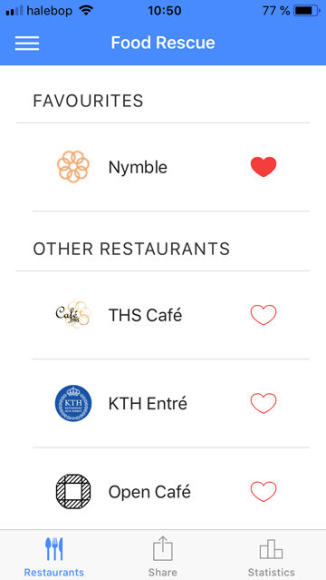
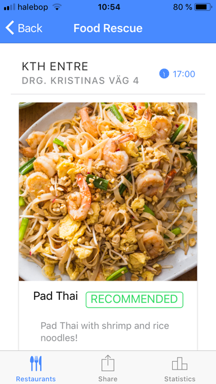
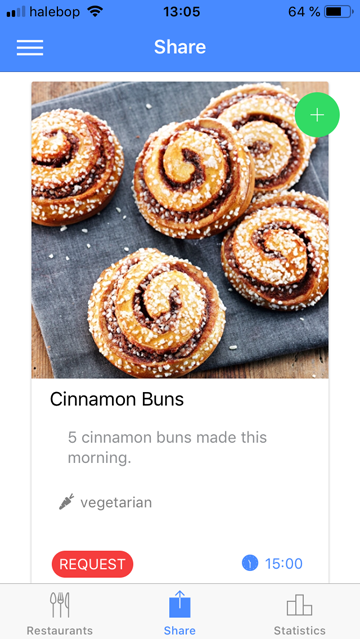
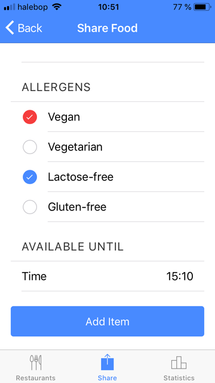
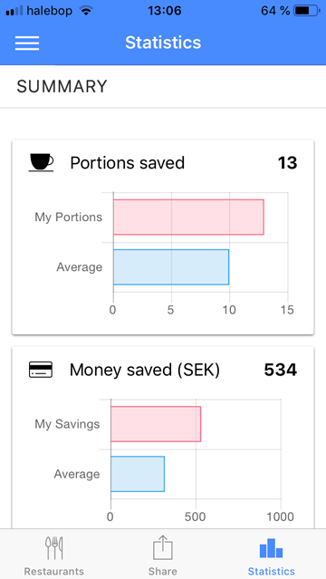
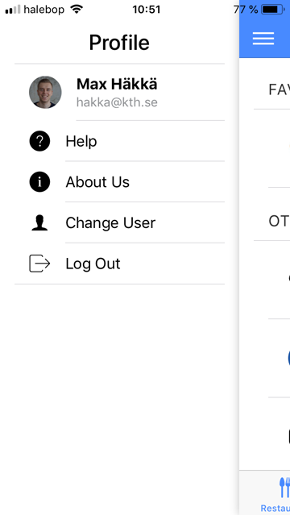

Food Rescue
An application for sharing food between students and restaurants.
What is it?
Food Rescue is an application for buying leftover foods from restaurants or sharing it with other users. The application is built with the Ionic mobile framework which allows for building hybrid applications with web based coding.

The front page of the application.

Showcasing a food item from a restaurant.

The tab for sharing food with others.

Options for sharing food.

Statistics for the user to compare.

User profile.